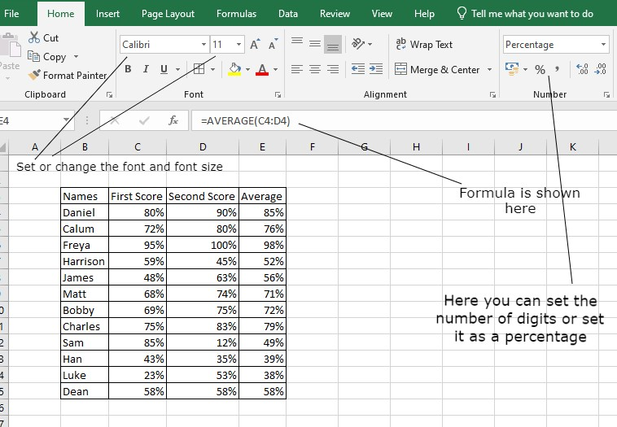

Microsoft Excel is a popular spreadsheet program that is part of the Microsoft Office suite of productivity tools. It is used to create and manage data in a tabular format, and to perform calculations and analysis on that data.
In a year 9 ICT class, students will typically be introduced to the basics of using Excel. This will include learning how to create and edit a spreadsheet, enter and format data, and perform basic calculations using formulas.
One of the key features of Excel is its ability to organize and manage data in a tabular format. This allows users to enter and organize data in rows and columns, making it easy to see and analyze the information.
Another important feature of Excel is its ability to perform calculations and analysis on the data. This includes using formulas to perform basic math operations, such as addition, subtraction, multiplication, and division, as well as more complex operations, such as finding the average or maximum value of a set of data.
Excel also offers a range of tools and functions that can help users visualize and analyze their data. This includes creating charts and graphs, filtering and sorting data, and using pivot tables to summarize and organize large sets of data.
Overall, Excel is a powerful and versatile tool that is widely used in a variety of settings, including business, finance, and education. By learning the basics of Excel, students can develop important skills and knowledge that will be useful in their future careers.
Sources: